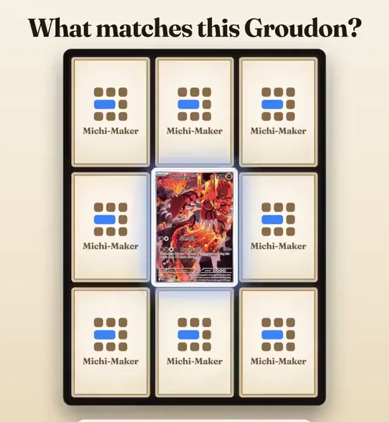
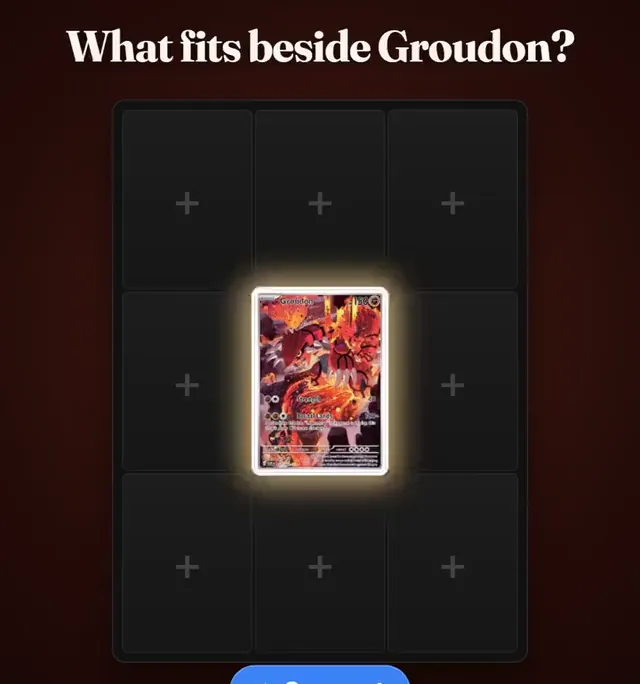
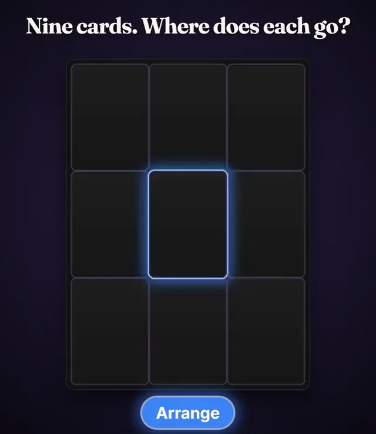
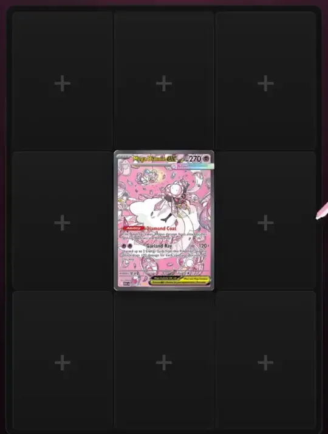
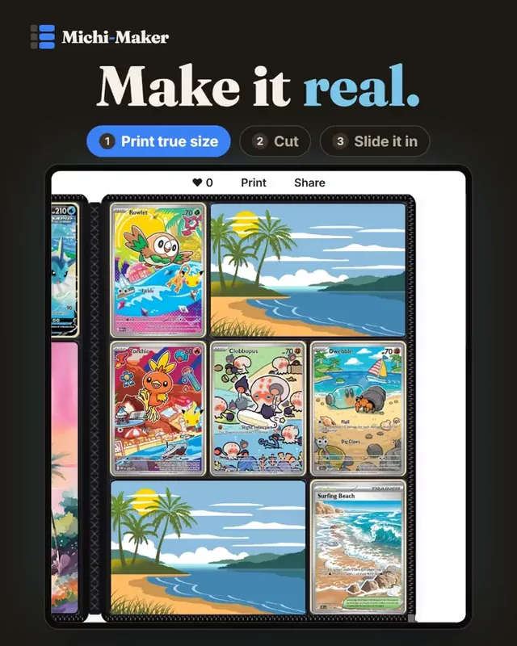
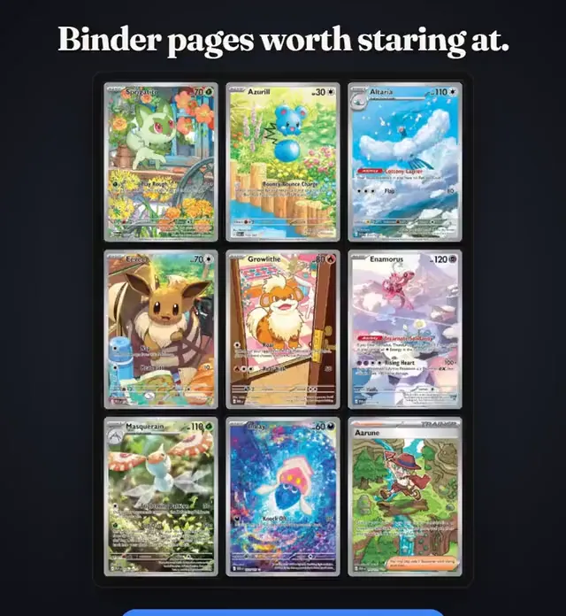

Pokémon binder pages
Binder pages worth staring at.
Put one card in a pocket and press Find Similar
. Eight cards that belong with it land around it, from English and Japanese cards.
Free to start. No download.

Try it here
Pick a colour. Watch the page refill.
Every card has a colour, so a page can have one too. Tap a shade and nine cards that wear it slide into the pockets.
Fire red: Charizard ex, Charmander, Flareon ex and six more.
Suggest
Your hand deals itself.
Press Suggest
and a hand of cards that suit the page fans out. Drag the ones you like into pockets; the rest go back.
- Start with any card you love.
- Press
Suggest
for a fresh hand. - Drag cards in, or press
Complete
to fill the rest.

Arrange
Nine cards. Where does each one go?
Press Arrange
and the page tries layouts with the cards you already have: colour runs, a centrepiece, mirrored corners. Press Keep
on the one that clicks.

A binder, not a list
Keep scrolling. It turns the page.
Your pages sit open like a book on a desk, the way a binder does. Swipe to turn them on a phone.
Colour search
One shade, one page.
Tap a colour dot and the search brings back cards in that shade. A whole page of pink, gold or midnight blue is a few taps away.

From screen to sleeve.
Print your page at true card size, cut along the lines and slide each one into a real binder sleeve. The gaps print as placeholders for the cards you are still hunting.

Share
Pages other collectors stop for.
Make a binder public and it joins the gallery, where collectors browse, like and borrow ideas. Share a page to Instagram or with a QR code.

Your first page takes a minute.
Pick three cards you like, or one Pokémon, and the binder starts there.